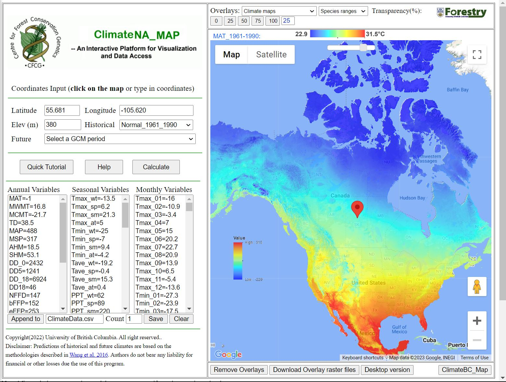
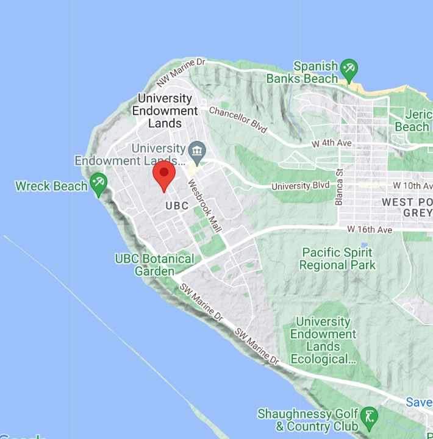
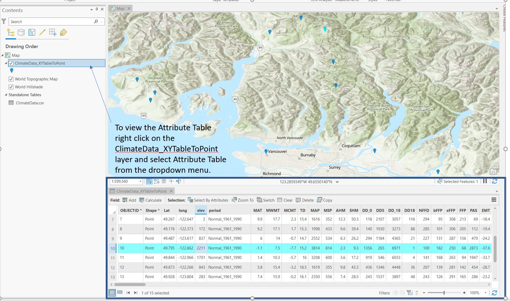
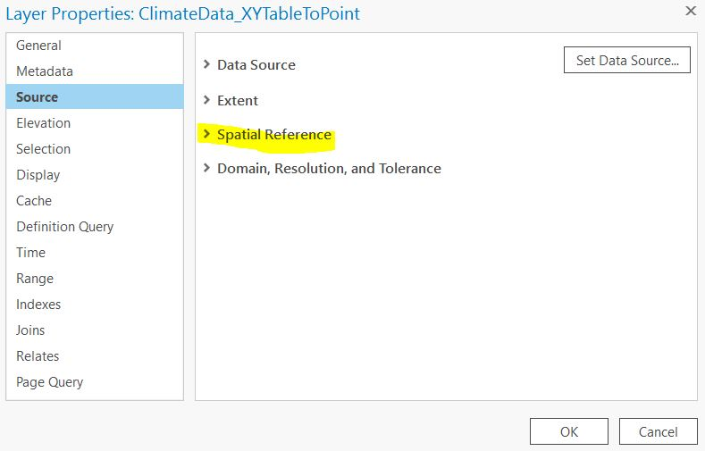
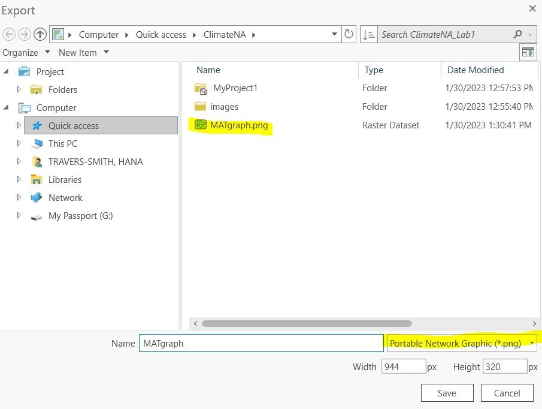

Lab 1 Introduction to spatial data and map projections
Written by Hana Travers-Smith
Lab Overview
Raster and vector data form the foundation of GIS analysis. In this lab you will download spatial data relating to current and future climate scenarios in Canada. You will then learn the basics of navigating ArcGIS Pro to display this data and create graphical outputs. This lab is designed to help you understand the differences in raster and vector data and practice visualizing spatial data on a map using sound cartographic principles. You will also learn about geographic coordinate systems and how to apply ArcGIS Pro to view different map projections.
Over the past century, greenhouse gas emissions have driven rapid climatic changes across the globe. These changes can be understood by measuring changes in Mean Annual Temperature (MAT) and Mean Annual Precipitation (MAP). In this lab, you will use the Climate NA webmap to generate spatial data and examine how these variables are changing over time. You will also choose a specific location and discuss the implications of projected changes in climate at this place.
Learning Objectives
- Understand differences between raster and vector datatypes
- Visualize different map projections in ArcGIS Pro
- Display spatial data in ArcGIS Pro using appropriate projections and symbology
Task 1: Generate point data from Climate NA
Step 1: Go to Climate NA webmap using the following link: ClimateNA_Map (climatewna.com)

By clicking on the map on the right you can generate Annual, Seasonal and Monthly climate variables which will be displayed on the left. You can also select locations by typing in coordinates into the Latitude and Longitude boxes and hitting Enter on your keyboard.
Q1. What map projection does the climate NA webmap use?
The Help button will take you to a page that describes what each of the climate variables mean. For this lab we will be focusing on two Annual variables: MAT (Mean Annual Temperature) and MAP (Mean Annual Precipitation).
Use the Historical drop-down menu to generate climate normals from different decades and years. The Future drop-down menu will allow you to generate climate projections for different time periods and climate warming scenarios.
The Quick Tutorial button will give more explanation for other features of the webmap.
Q2. Zoom in to the UBC Vancouver campus, what is the MAT and MAP at this location for the normal period 1961_1990? (You do not need to click on the exact same point shown below, but make sure to click somewhere on campus).

Step 2: Next we will be generating climate data at varying elevations within Vancouver and the Coast Mountains. Set the Historical drop-down menu to Normal_1961_1990.
Q3. In two sentences describe what a climate normal is and why it might be important in understanding changes in climate.
Zoom in to the following area showing greater Vancouver and the Coast Mountains.

Pick a location in the greater Vancouver area (choose a location that is on land, i.e. not in the ocean), click on the map to add a pin then click Calculate to generate climate data for this location.
Next, click the Append to button to add the climate data to a .csv file that we will download later. The Count field should now show 1, indicating that one location has been added.
Next, click on 10-15 new locations on the map, click Calculate then Append to. Later, we will graph climate at different elevations, so try to sample a range of mountain peaks, valleys and flat locations. Again, choose locations on land and vary the distance to water bodies.
Calculate and append climate variables for 10-15 new coordinates.
When you are done, hit the Save button to download the csv file to your Downloads folder (this will happen automatically).
Task 2: Import coordinates as spatial points in ArcGIS Pro
Step 1: Open ArcGISPro. Click on the Map button, then name your new project and save it as Lab 1 on your computer. The default filepath might look something like this: C:\Users\YourUsername\Documents\ArcGIS\Projects\Lab1.

To get started, click the Insert button on the top ribbon, then the New Map button.

Step 2: To import ClimateData.csv to ArcGIS Pro open File Explorer and navigate to the Downloads folder. Click and drag ClimateData.csv to the Contents pane.

Step 3: Next, we will add data to the map using the lat/long coordinates from the csv. Right click on ClimateData.csv in the Contents pane then select Display XY Data from the dropdown menu. Ensure that the X Field shows the column corresponding to longitude (long) and the Y Field shows the column corresponding to latitude (lat). Leave the output feature class coordinate system as the default. Click OK.

Step 4: Your point features should now be displayed in the Map pane. Right click on the ClimateData_XYTableToPoint layer and select Attribute Table. This is where you can view the climate data associated with each point.

Right click on the ClimateData_XYTableToPoint layer in the Contents pane and select Properties from the dropdown menu. Navigate to Source and examine the Spatial Reference information by opening the menu.

Q4. What is the Geographic Coordinate System of the layer? What is the Angular Unit?
Step 5: Next we will explore point symbology. Right click on ClimateData_XYTableToPoint layer and select Symbology. You can change the symbol of all the points by clicking on the Symbol button and selecting a new symbol from the Gallery tab.

We can also vary the color of each point by different variables in the Attribute Table. Right click on ClimateData_XYTableToPoint layer and select Symbology. Under Primary symbology, use the dropdown menu to change the symbology type to Graduated Colors.

Use the Field option to change which variable to classify points by. In this example we are using the Mean Annual Temperature (MAT) field and plotting colder points in purple/blue and warmer points in yellow/red. Explore the different color options in the Color Scheme menu.
You can also change the number of classes and the method of choosing the classes using the Method and Classes options.
Plot your points and color code them by Mean Annual Precipitation (MAP). Take a screenshot of the points on the map and the symbology menu to include in your final deliverables.
Step 6: Next, we will create a simple chart of our climate data. Right click on ClimateData_XYTableToPoint layer and select Create Chart > Line Chart.
In the Chart Properties pane set the Date or Number field to elev. This will plot elevation on the X-axis. Next, under Numeric fields select MAT, this will plot Mean Annual temperature on the Y-axis.
Go to the General tab and change the chart title and X and Y axis labels to something descriptive and include units of measurement. When you are finished click the Export > Export as graphic. Name the chart and save it as a .png.
Create charts of change in MAT and change in MAP by elevation. Include the images in your final deliverables.


Task 3: Exploring map projections
Step 1: Open ArcGIS Pro and insert a new Map.
To visualize how different map projections alter shape, area and distance of spatial data drag and drop the ellipses.shp shapefile to the Map. Note that the default projection in ArcMap is the pseudo-Plate-Caree projection.

Use the measure tool from the top ribbon (Map > Measure) to measure the length and width of the ellipses at the poles and at the equator. You will notice that the ellipses are actually perfect circles with a diameter of ~1000km.
Q5. What areas of the map show the most distortion? What properties of the circles are distorted?
You can change the projection of the entire map in the Map Properties > Coordinate Systems tab. Any layers in the contents pane will be projected on the fly and displayed in this coordinate system. Note that changing the coordinate system of the Map does NOT change the underlying projection of the data itself.
Step 2: Compare the following three projections: Mercator (world), Cylindrical Equal Area (world) .
Task 4: Import and display raster data
Step 1: Go to Climate NA webmap using the following link: ClimateNA_Map (climatewna.com)
We will be downloading 4 raster datasets to calculate differences in current and future projections of MAT and MAP.
To download a raster overlay, look at the Overlays dropdown menu at the top of the screen (NOT the Coordinates Input that you used before), then select the layer you want and click Download Overlay raster files.
Download the following layers:
- MAT_1961-1990
- MAT_ssp245_2071_2100
- MAP_1961_1990
- MAP_ssp245_2071_2100
Q7. From the IPCC Sixth Assessment Report what does the SSP2-4.5 scenario represent? Answer in 2-3 sentences.

Step 2: Drag and drop the 4 climate rasters from your Downloads folder to the Contents pane.
Change the coordinate system of the map to NAD 1983 Statistics Canada Lambert
Right click on the mat_1961_1990 layer in the Contents pane > Symbology. Change the color scheme to better see the range of values.

Step 3: Next we will calculate the difference in historical and projected MAT. First, navigate to the Imagery tab in the top ribbon > Raster Functions.
Under the Math tab click on the Minus tool. This tool subtracts cell values between two rasters and outputs a new raster whose values are the difference between the two inputs. In the Raster field input the mat_ssp245_2071_2100 layer. In the Raster2 field input the mat_1961_1990 layer. This will subtract the historical MAT values from the projected MAT values. Click Create new layer.

Notice that MAT values have been scaled by a factor of 10. Next, we will divide the cell values of the change in MAT raster by 10 to put values in units of ˚C. Navigate back to the Raster Functions menu and select the Divide tool. Input the Minus_mat_ssp245_2071-2100.tif_mat_1961-1990.tif layer in the Raster field. In the Raster2 field type in 10. Create new layer.
You should now have a layer that looks like the following:

Q7: In 1-2 sentences comment on the pattern of change in MAT. Where are the greatest changes expected in Canada?
Repeat Steps 2-3 with the MAP. Note that cell values need to be scaled by a factor of 100 to convert to mm.
Take a screenshot of the final change in MAP layer (similar to above) and include in the final deliverables.
Q8: What is the minimum and maximum change in MAP across the entire raster (in units of mm)? What does a negative change in MAP indicate?
Q9: In 1-2 sentences comment on the pattern of change in MAP. Where are the greatest changes expected in Canada?
Step 4: Now zoom into a place in Canada that is significant to you!
(Hint: you can adjust the transparency of the layers by clicking on them and navigating to the Appearance menu in the top ribbon > Transparency.
Turn on the change in MAT and MAP layers. Go to the Map tools on the top ribbon > Explore. Click on the map to open a pop-up window showing the lat/long of the point you clicked as well as the cell values from all the layers that are turned on in the Contents pane.
In the example below I have chosen Victoria, BC where the projected change in MAT is 2.7C.
For your chosen place, record the Lat/Long and the change in MAT and MAP. Include in your final deliverables.

Step 6: For the place you chose in the previous step, discuss the following in 500 words or less:
-Describe the current and projected changes in MAT and MAP. What is the direction of change? How does the magnitude of change compare to other sites across Canada?
-Identify an environmental concern that could be intensified by the projected changes in climate. Is this region susceptible to wildfire? Flooding? Droughts? Why is this issue important? Use 1 peer reviewed source to back up your argument. (Provide the full citation for this reference at the end of the discussion).
-Briefly, what changes could help mitigate this concern? Is there a specific technology that could be developed or a change in lifestyle that you would like to see in the future?